Exercice 1: Cryptographie conventionnelle
Exercice 2: Cryptanalyse fréquentielle
Comme expliqué dans la nouvelle de E. Poe, les chiffrements par substitution alphabétique peuvent être casser facilement par une analyse fréquentielle. Par exemple, dans un texte écrit en langue française, la lettre la plus fréquente est généralement le “E” et puisqu’un chiffrement de César ne modifie pas les fréquences, la lettre qui apparaît le plus fréquemment dans le texte chiffré correspond vraisemblablement à “E” et si c’est le cas le décalage entre les deux lettres donne la clé et permet de retrouver l’intégralité du message clair.
Exercice 3: Cryptographie à clé publique basée sur les courbes elliptiques
En mathématiques, une courbe elliptique est une courbe algébrique définie sur un corps , unie entre autres propriétés, d’une loi de groupe définie sur l’ensemble de ses points.
Si la caractéristique du corps est différente de 2 et 3, une courbe elliptique est donnée par l’équation de Weierstrass 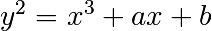, où 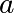 et 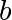 sont des éléments du corps vérifiant 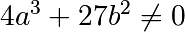.
Nous considérons l’ensemble des points de la courbe
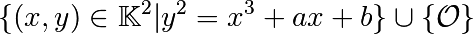
où 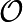 est un point sur la droite à l’infini (dans le plan projectif correspondant). Ce point représente l’élément neutre pour la loi d’addition de la courbe.
L’usage des courbes elliptiques en cryptographie a été proposé en 1986, indépendamment par Neal Koblitz et Victor Miller, pour l’instanciation des opérations cryptographiques asymétriques, comme l’échange de clé entre deux personnes sur un canal non-sécurisé. Par rapport aux systèmes fondés sur RSA, les systèmes de chiffrement sur les courbes elliptiques utilisent des clés plus courtes, pour un niveau de sécurité équivalent.
Par la suite, on considéra une courbe elliptique définie sur un un corps fini 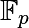 avec 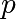 un nombre premier 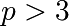. Pour définir l’addition de deux points distincts 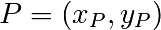 et 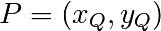 sur la courbe elliptique 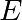, on remarque d’abord que par ces deux points passe une droite bien définie. Par le théorème de Bézout, cette droite recoupe la courbe en un troisième point. La somme des points 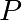 et 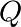 est alors donnée par le symétrique de ce point par rapport à l’axe des abscisses. On donne maintenant des équations explicites pour calculer les coordonnées affines du point somme.
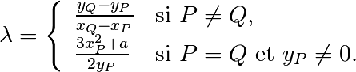
et
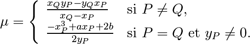
Alors la droite 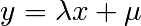 passe par et et les coordonnées de 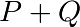 sont :
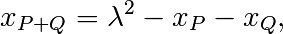
et
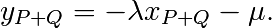
Loi d’addition sur la courbe elliptique. Soit la courbe elliptique donnée par l’équation 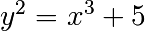, définie sur le corps fini 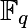, avec 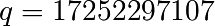. Le nombre de points sur cette courbe est 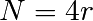, avec 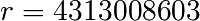.
Écrire une fonction qui calcule un point au hasard de la courbe. Indication: pour cela, on écrit d’abord une fonction calculant des racines carrées 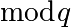. On se rappelle que lorsque 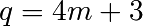, la racine carrée de 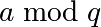 (quand elle existe) est 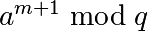.
Écrire une fonction qui calcule la somme des deux points de la courbe. On testera cette fonction à l’aide des exemples suivants (avec P=[6587596005,10930896470], Q=[2846256190,0], R=[1099048983,3110000776])
- P+Q=[10674847433,12569638509], P+R=[6587596005,6321400637]
- P+P=[1099048983,14142296331], Q+Q=O
- 3P=[8376961733,938225291], 5P=[1708109053,5741342158]
Écrire une fonction qui étant donné un point de la courbe, et un entier 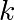, calcule efficacement le point 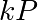. Pour cela, on utilisera l’algorithme de multiplication rapide (double and add ou square and multiply). On testera cette fonction sur un point au hasard d’ordre 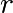 de la courbe (i.e. 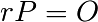).
Échange de clé Diffie-Hellman. Deux personnes, Alice et Bob, veulent échanger un message chiffré nécessitant une clé 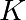, qui est un nombre entier. Ils doivent échanger la clé d’abord, mais ils ne disposent pas de canal sécurisé pour cela. En 1976, Diffie et Hellman ont proposé une méthode qui répond à ce problème. Le protocole de Diffie Hellman utilise un groupe cyclique 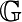 (noté additivement) d’ordre et repose sur l’idée suivante:
- Étant donné un nombre entier et un élément dans le groupe , il est facile de calculer .
- Étant donné 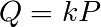, , il est calculatoirement difficile de retrouver
Le fonctionnement du protocole est le suivant. Alice choisit un nombre au hasard , calcule 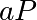 et l’envoie à Bob. Bob choisit à son tour un nombre et envoie à Alice 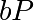. Alice peut alors calculer 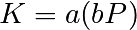. Bob calcule 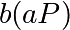 et obtient la même clé qu’Alice.
- (Travail en binôme) En utilisant le groupe d’ordre des points de la courbe , échangez avec un collègue une clé secrete .
L’attaque pas de bébé, pas de géant sur le logarithme discret. La méthode de Shanks pour résoudre le problème du logarithme discret est basée sur l’observation suivante :
En notant 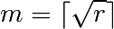 la partie entière supérieure de la racine carrée de , on peut écrire tout élément 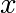 inférieur à comme 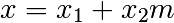, avec 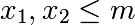. Par conséquent, l’égalité 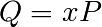 peut s’écrire 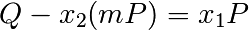.
Dans un premier temps (le pas de bébé), l’algorithme construit l’ensemble 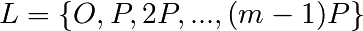. Dans un deuxième temps (le pas de géant), il calcule S=(-m)P puis recherche la valeur du membre de droite de l’équation précédente dans la liste L
construire l'ensemble L = {O,P,2P,...,(m-1)P}
pour i de 1 à m-1 faire
si Q+iS est dans L alors
retourner (j-im mod r) tel que jP=Q+iS.
Pour chercher de manière efficace dans l’ensemble L on pourra utiliser une structure de dictionnaire.
- Implanter l’attaque de Shanks, afin de retrouver, à partir du point de la courbe qui vous a été envoyé, le secret de votre collègue.